Games
Legend of Zelda
The Legend of Zelda is the first installment in the Zelda franchise, and its success allowed the development of many sequels in the spawn of over three decades. The game itself introduces a new level of gaming for its time, one that includes roleplaying, action, adventure, and puzzle/logic.
The goal of The Legend of Zelda is to collect the 8 pieces of the Triforce of Wisdom, defeat Ganon, and to rescue Princess Zelda. To obtain the pieces of the Triforce of Wisdom, the player must take on the role of the hero, Link, and explore the first eight dungeons in the game before embarking on the journey to the final dungeon, Level 9: Death Mountain, to defeat the evil wizard Ganon.
Zelda II: The Adventure of Link
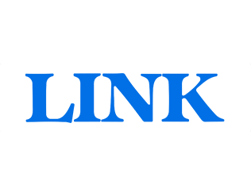
A little under a year after the international first installment of the series, Zelda II: The Adventure of Link was released for the Nintendo Entertainment System, taking the series in a different direction with this side-scrolling adventure.
The Adventure of Link is without a doubt the hardest Zelda game to date according to most fans of the series. One of these challenges was the aspect of introducing a "lives system" that further made the game frustrating when Link ran out of lives and was forced to return to the starting area, having to traverse across Hyrule and back into the treacherous dungeons where they fell.
The Legend of Zelda: A Link to the Past
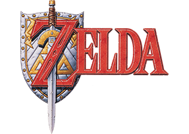
The Legend of Zelda: A Link to the Past is the third main installment of The Legend of Zelda series, and the first and only title for the Super Nintendo Entertainment System, released in 1991 in Japan and 1992 in the United States.
A Link to the Past was a return to the overhead view and gameplay style of The Legend of Zelda. The game was also the first in the franchise to have a real, tangible art style. The previous installments on the NES, due to resolution and color limitations were unable to attain this.
The Legend of Zelda: Link's Awakening
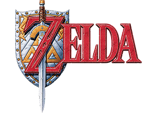
The Legend of Zelda: Link's Awakening is the fourth main installment of The Legend of Zelda series. It is the first title in the series to be released on handheld system, and the only Zelda title on the original Game Boy.
A colorized update, titled Link's Awakening DX, was released for the Game Boy Color in 1998. During a Nintendo Direct on February 13, 2019, an eponymous remake of the game was announced for Nintendo Switch. The remake was released on September 20, 2019.
The Legend of Zelda: Ocarina of Time
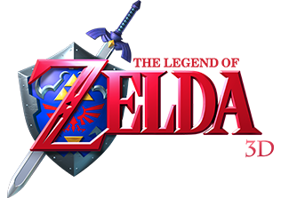
The Legend of Zelda: Ocarina of Time is the fifth main installment of The Legend of Zelda series and the first to be released for the Nintendo 64. It was one of the most highly anticipated games of its age, and is listed among the greatest video games ever created by numerous websites and magazines.
At E3 2010, a remake of the game for Nintendo 3DS was announced, called Ocarina of Time 3D. The remake was released in June 2011.
The Legend of Zelda: Majora's Mask
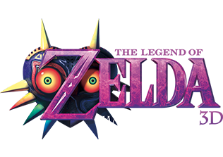
The Legend of Zelda: Majora's Mask is the sixth main installment of The Legend of Zelda series, first released on the Nintendo 64 in 2000. Unique among The Legend of Zelda series, the game includes a time system that spans three days, and this cycle must be reset periodically to progress through the game.
Majora's Mask is the sequel to the first 3D Zelda game, Ocarina of Time, and uses the same engine, as well as many graphic resources. Many of the conventions pioneered in Ocarina of Time are present in Majora's Mask, including characters, enemies, and items.
The Legend of Zelda: Oracle of Seasons and Oracle of Ages
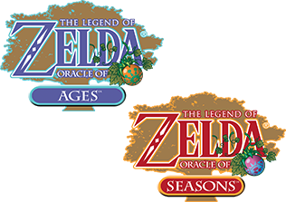
The Legend of Zelda: Oracle of Seasons and The Legend of Zelda: Oracle of Ages are seventh and eighth installments in The Legend of Zelda series, developed by Flagship (a subsidiary of Capcom) and published by Nintendo for the Game Boy Color.
When one is beaten, it can be linked to other game through the use of passwords. By completing the linked game, you can fight Twinrova and Ganon, completing the two games to their full extent.
The Legend of Zelda: Four Swords
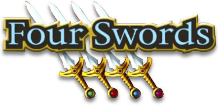
The Legend of Zelda: Four Swords is the ninth main installment of The Legend of Zelda series, released alongside A Link to the Past for the Game Boy Advance as a package known as A Link to the Past & Four Swords.
As part of the 25th Anniversary of The Legend of Zelda series, an enhanced port of the game was released for the Nintendo DSi and Nintendo 3DS as a limited-time free download, Four Swords Anniversary Edition.
The Legend of Zelda: The Wind Waker
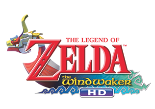
The Legend of Zelda: The Wind Waker is the tenth main installment of The Legend of Zelda series. It is the first Zelda game for the Nintendo GameCube & the sixth game in the series to be released on a Home console.
The Wind Waker is notable for being the first game in the series to employ cel-shading, a lighting and texturing technique that results in the game having a cartoon-like appearance.
During a Nintendo Direct on January 23, 2013, an enhanced remaster of the game was announced for the Wii U console, called The Wind Waker HD, and was released during the Fall of that year.
The Legend of Zelda: Four Swords Adventures
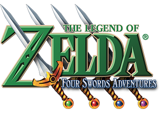
The Legend of Zelda: Four Swords Adventures is the eleventh main installment of The Legend of Zelda series. It incorporates a graphical style that combines Four Swords and A Link to the Past. It is the only console Zelda title to date to incorporate multiplayer elements into its main campaign.
Also, it is the only title to break locations and temples up into succinct, separate stages and levels which can be replayed even after beating them once. The game itself, though an innovation in Zelda gameplay, is heavily inspired by the music, graphics, and locations of A Link to the Past.
The Legend of Zelda: The Minish Cap

The Legend of Zelda: The Minish Cap is the twelfth main installment of The Legend of Zelda series. It was released for the Game Boy Advance in 2004.
The Minish Cap features the fully explorable land of Hyrule, although it can be viewed from the eyes of a human or the eyes of a Minish, a race of tiny people and an alternate form that Link can transform into.
The Legend of Zelda: Twilight Princess
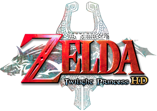
The Legend of Zelda: Twilight Princess is the thirteenth main installment of The Legend of Zelda series, released for both the Nintendo GameCube and Wii. It was highly anticipated by many members of the gaming community and was regarded as finally fulfilling the dreams of those who wanted a much more realistic and mature Zelda game,
During a Nintendo Direct on November 12, 2015, a remaster of the game for Wii U called Twilight Princess HD was announced, and was later released in March 2016. On December 5, 2017, Twilight Princess was released on the NVIDIA Shield TV exclusively in China.
The Legend of Zelda: Phantom Hourglass
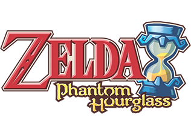
The Legend of Zelda: Phantom Hourglass is the fourteenth main installment of The Legend of Zelda series. It is the first The Legend of Zelda game for the Nintendo DS and a direct sequel to The Wind Waker.
Like the 2D games, excluding The Adventure of Link, Phantom Hourglass features a top-down view. However, some sections of the game such as certain boss battles and the ocean feature a more traditional 3D view. The entire game can be controlled using just the Nintendo DS stylus, using it to tap or swipe on the screen to strike with Link's sword or use the six unique items found throughout the game.
The Legend of Zelda: Spirit Tracks
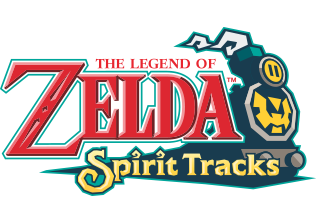
The Legend of Zelda: Spirit Tracks is the fifteenth main installment of The Legend of Zelda series. It is the second Zelda game for the Nintendo DS.
Link must create new tracks by defeating a level in the Tower of Spirits obtaining a section of the Rail Map. Link must then enter the sanctuary of the specific realm and play a duet with a Lokomo, creating the tracks necessary to enter the Temple of the specific realm. After defeating the Temple, Link must return to the Tower of Spirits to obtain yet another section of the Rail Map. Link must defeat all five Temples and all six levels of the Tower of Spirits and then defeat Malladus to complete his epic adventure.
The Legend of Zelda: Skyward Sword
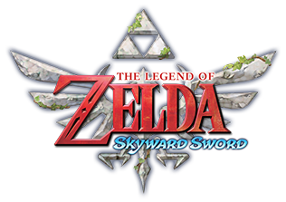
The Legend of Zelda: Skyward Sword is the sixteenth main installment of The Legend of Zelda series. It is the first The Legend of Zelda game created specifically with the Wii in mind, and requires Wii Motion Plus.
A high-definition remaster of the game, Skyward Sword HD, was confirmed as part of the February 17, 2021 Nintendo Direct.[10] It was released on July 16, 2021.
The Legend of Zelda: A Link Between Worlds
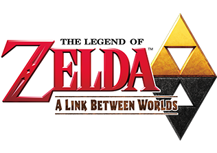
The Legend of Zelda: A Link Between Worlds is the seventeenth main installment of The Legend of Zelda series. It is the first Zelda title developed specifically for the Nintendo 3DS and an indirect sequel to A Link to the Past, featuring the same version of Hyrule but new characters and gameplay elements.
A Link Between Worlds added a brand new gameplay mechanic to the Legend of Zelda series with the wall merging mechanic. This combines top down and side scrolling gameplay, creating never before puzzle opportunities. This makes it so that Link can get to areas in dungeons and the overworld that are seemingly impossible to reach, by merging into a wall and safely crossing hazards below.
The Legend of Zelda: Tri Force Heroes
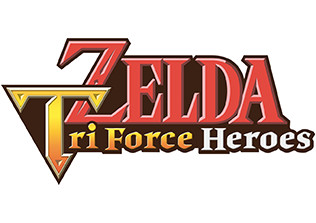
The Legend of Zelda: Tri Force Heroes is the eighteenth main installment of The Legend of Zelda series. The game was released for the Nintendo 3DS on October 23, 2015 in North America and Europe, October 24 in Australia, and October 22 in Japan. It was first revealed during E3 2015 on June 16.
Tri Force Heroes is similar to the Four Swords games, in which Link is accompanied by two other Links (as opposed to three more in the Four Swords games) as part of the game's Multiplayer. These Links are depicted as green, blue, and red. The game supports Download Play, local wireless, and online co-op gameplay.[20] During online co-op, players can select the option to play with friends or to be matched with random players from the Internet.
The Legend of Zelda: Breath of the Wild

The Legend of Zelda: Breath of the Wild is the nineteenth main installment of The Legend of Zelda series. It was released simultaneously worldwide for the Wii U and Nintendo Switch on March 3, 2017.
Link awakens to the call of an unfamiliar voice after a long slumber, with no memory of his identity or whereabouts. Venturing outside the Shrine of Resurrection onto the Great Plateau, the strange voice gives Link instructions to make his way to the point on his map. Along the way, Link meets a mysterious Old Man, who seems to know more about Link and his past than he initially reveals. After completing a series of challenges tasked to him by the Old Man, Link embarks upon a journey to restore his memories, learn about the past, confront Calamity Ganon residing in Hyrule Castle and restore peace to Hyrule.
The Legend of Zelda: Tears of the Kingdoms
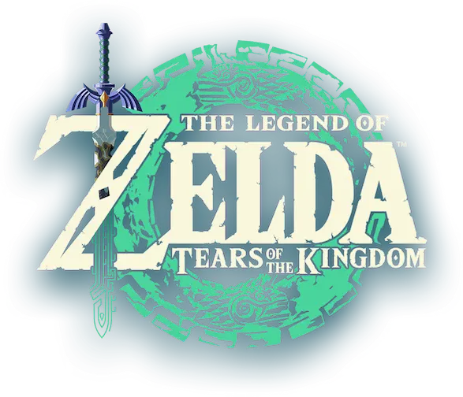
The Legend of Zelda: Tears of the Kingdom is the twentieth main installment in The Legend of Zelda series. The direct sequel to 2017's Breath of the Wild, the game was released worldwide on May 12, 2023 on the Nintendo Switch.
Direct sequel to Breath of the Wild, this game presented what it's prequel lacked, a great story and more refined mechanics. Just like it's prequel this game received many awards and nominations, it was critically acclaimed to be one of the greatest games of all time.
| Game |
Platform |
Sales (in millions) |
| The Legend of Zelda |
NES, GBA |
7.29 |
| Zelda II: The Adventure of Link |
NES, GBA |
4.971 |
| The Legend of Zelda: A Link to the Past |
SNES, GBA |
7.43 |
| The Legend of Zelda: Link's Awakening |
GB, GBC, Switch |
12.68 |
| The Legend of Zelda: Ocarina of Time |
N64, 3DS |
14.04 |
| The Legend of Zelda: Majora's Mask |
N64, 3DS |
6.82 |
| The Legend of Zelda: Oracle of Seasons and Ages |
GBC |
3.99 |
| The Legend of Zelda: Four Swords |
GBA |
1.92 |
| The Legend of Zelda: The Wind Waker |
GameCube, Wii U |
6.80 |
| The Legend of Zelda: Four Swords Adventures |
GameCube |
0.758 |
| The Legend of Zelda: The Minish Cap |
GBA |
1.76 |
| The Legend of Zelda: Twilight Princess |
GameCube, Wii, Wii U |
10.02 |
| The Legend of Zelda: Phantom Hourglass |
DS |
4.76 |
| The Legend of Zelda: Spirit Tracks |
DS |
2.96 |
| The Legend of Zelda: Skyward Sword |
Wii, Switch |
7.82 |
| The Legend of Zelda: A Link Between Worlds |
3DS |
4.26 |
| The Legend of Zelda: Tri Force Heroes |
3DS |
1.36 |
| The Legend of Zelda: Breath of the Wild |
Wii U, Switch |
33.31 |
| The Legend of Zelda: Tears of the Kingdom |
Switch |
20.28 |